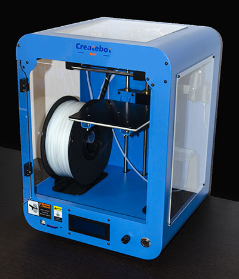

Nuestros equipos
Disponemos de equipos dedicados al escaneo en dos y tres dimensiones, prospección geofísica y captura de imágenes hiperespectrales.
Equipo: Prospección geofísica mediante tomografía eléctrica
Equipo principal: ABEM Terrameter LS (equipo de prospección eléctrica del terreno) con 4 canales.
- Equipo complementario: cables, piquetas (electrodos), pinzas de conexión, batería auxiliar, 4 cables de 21 tomas con hasta 10 m de separación entre tomas, electrodos de acero inoxidable, pinzas y cables de conexión.
- Software de interpretación RES3DINV y RES2DINV para el procesado de datos de resistividad y polarización Inducida.
Equipo: Digitalización 3D
Equipo principal: escáneres Creaform Go!Scan 20, Creaform Peel 3D y Leica RTC360.
Equipo complementario:
- 2 ordenadores portátiles HP ZBook 15 G2, Intel Core i7-4710MQ 2.5 GHz, 32 GB RAM, W7 Profesional.
- Ordenador portátil HP Zbook 15, Intel Core I7, 64 GB RAM, W10 Profesional.
- Licencias de VXScan, VXElements y VXModel.
- Licencias Cyclone Register 360 y Leica Cyclone 3DR.
Creaform Go!Scan 20 (izq) y Leica RTC360 (der).
Equipo complementario (del Grupo Kraken): escáner de sobremesa NextEngine.
Equipo: Cámara hiperespectral
Equipo principal: cámara hiperespectral Cubert UHD-285.
Equipo complementario:
- 1 licencia de software de manejo y análisis Cubert.
- 2 focos de iluminación de 100 y 1000 W.
- 1 placa de calibración Zenith Lite (95% R).
- 1 ordenador portátil ThinkPad Lenovo.

Equipo complementario: espectrorradiómetro SpectraScan PR-701s.
- rango de medida: 380-780 nm.
- resolución digital: 16 bits.
- tiempo de integración: de 25 ms a 60 s.
Equipo: Impresoras 3D
Equipo principal: impresoras Createbot Max 3D Printer y Createbot Mini 3D Printer.

Equipo: Servidor de cálculo
Equipo principal: clúster de computación Supermicro consistente en:
- Nodo de gestión y almacenamiento Supermicro A+ SERVER AS-2022G-URF formado por:
2 procesadores AMD 6328 3,2 Ghz (8 cores x 2 = 16 cores total).
64 Gb RAM DDR3-1600.
1 Intel 82576 Dual-Port Gigabit Ethernet.
2 discos duros 2.5" SAS3 300Gb HUC156030CSS20. - 10 nodos de cómputo Supermicro Blade SBA-7142G-T4 (enlace) formado por:
4 procesadores AMD 6376 2.3 Ghz (16 cores x 4 = 64 cores total).
128 Gb RAM DDR3-1600.
Intel 82576 Dual-Port Gigabit Ethernet.
2 discos duros 2.5" HITACHI 500Gb 7200 RPM CSC7K500. - Chasis Rack 7U para 10 nodos SBE-710E-R75.
- Armario Mnemmix SERVER41U.60 de 19" y 41U con puertas laterales.
Equipo: Material fotográfico
Equipo principal (del Grupo Kraken): cámara fotográfica digital de formato medio Pentax 645Z.
Características principales:
- sensor CMOS de 51 Mpíxeles (8256 x 6192) de 43.8 x 32.8 mm.
- formato RAW DNG de 14 bits.
- sin filtro anti-aliasing.
- corrección automática de la distorsión geométrica de los objetivos.
Equipo complementario:
- objetivos de focal fija de 55 mm, 120 mm macro y 400 mm.
- paneles de iluminación LED con CRI > 95.
- trípodes, rótula motorizada, mástil, cartas de color, cámara complementaria (Nikon D7000).
- Colorímetro PCE-CSM 5.
Equipo: Cámara termográfica FLIR E60bx
Equipo principal (del grupo Kraken): FLIR E60bx (cámara termográfica).
Principales características:
- sensor infrarrojo térmico de 320x240 píxeles.
- sensibilidad mejor que 0.045 °C.
- exactitud: ±2 °C.
- rango de medidas: -20 °C a +120 °C.
- captura imagen y video, conexión wifi.
Equipo: Cámara de video de 360º Vuze
Equipo principal (del grupo Kraken): Vuze 3D 360º Camera (cámara esférica).
Principales características:
- graba videos esféricos con resolución 4K a 30 fps.
- formato de video H.264.
- graba audio en formato AAC.
- integra 8 objetivos con un campo de visión de 180x120.
- integra wifi para comunicación y manejo desde tablet o teléfono externo.
- dimensiones: 12x12x3 cm.